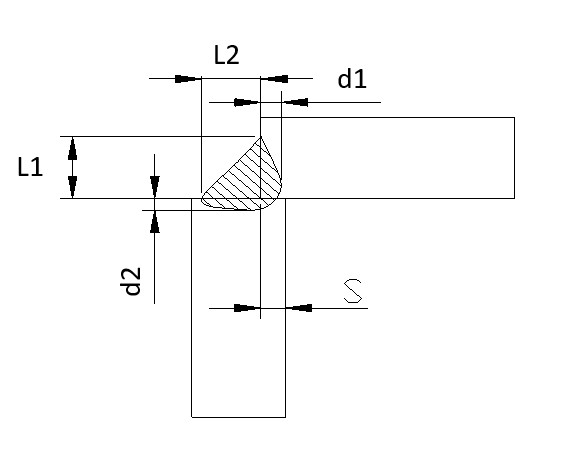
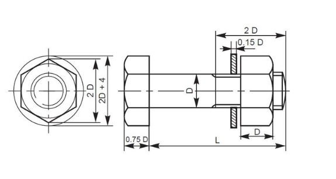

Calculation Tools
เลือกโปรแกรมที่ต้องการคำนวณ
1️⃣

🔩 Welding Calculator
คำนวณความลึกและความยาวรอยเชื่อม
2️⃣
📐 Bending
คำนวณระยะพับของวัสดุ
3️⃣
📏 Clearance
ตรวจสอบระยะห่างของช่องว่าง
4️⃣

🔧 Nut Welding
ตรวจสอบขนาดเกลียวน็อตและความกว้างหัวน็อต
5️⃣
🛠️ Cutting Force
ตรวจสอบแรงเครื่อง (Ton)